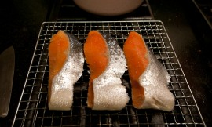

I’m back
I’m back! There would be more updates on recent photos. We moved to Boerum Hill in June. So far, good neighborhood, good vibes. I’m feeling out of sync with everyone, everything right now. It’s natural for me to have fluctuations in mood from time to time, I wonder what if it’s something that’s [...]July 5, 2013 /
I’m back
I’m back! There would be more updates on recent photos. We moved to Boerum Hill in June. So far, good neighborhood, good vibes. I’m feeling out of sync with everyone, everything right now. It’s natural for me to have fluctuations in mood from time to time, I wonder what if it’s something that’s [...]July 5, 2013 /


혼자서
올해 11월을 특별히 바쁘게 보내게 된 우리 남편은, 지난주 런던에서 돌아와 짧은 재회를 한 후 다시 태국으로 가버렸다. 한국에도 볼 일이 있어, 추수감사절도 다 지나 다음 주 주말에나 돌아오는 무려 열흘이 넘는 일정으로 떠났다.아무리 바쁜 척을 하며 작업을 하고 글을 쓰고 학교에 가서 친구들과 목이 쉬도록 이야기를 하며 밥을 먹어 [...]November 17, 2012 /


참새와 농어구이
뉴욕의 욕심쟁이 가을은 시월 말이 다 되어가도록 좀처럼 겨울에게 자리를 내어주지 않는다. 기분 좋게 쌀쌀하다 싶어 두꺼운 스웨터를 꺼내 입고 외출하면 이내 더워 후회하고 만다. 이번 겨울에는 일찍부터 월동준비를 한답시고 부지런히 짜놓은 목도리와 담요가 서운하기만 하고.그래도 이 따뜻한 날씨 덕에 학교와 집을 오가는 중 새 구경을 한다. 좀 부지런히 센트럴 [...]October 24, 2012 /


Little things that make me feel grown up
남편이 나에게 부엌에 있는 물건들의 위치를 물을 때마다 갑자기 어른이 된 느낌이 든다.마른 표고버섯은 왼쪽으로부터 두 번째 캐비넷 맨 위 칸에 있고 황설탕은 그 아래 칸에, 마른 오미자는 냉동실 문 아래칸 지퍼백에 들어있다.스무 살 중반쯤에 캐나다로 가서 처음으로 텅텅 빈 부엌 캐비넷과 냉장고를 맞이했을 때도 비슷한 느낌이었다.May 26, 2012 /
Little things that make me feel grown up
남편이 나에게 부엌에 있는 물건들의 위치를 물을 때마다 갑자기 어른이 된 느낌이 든다.마른 표고버섯은 왼쪽으로부터 두 번째 캐비넷 맨 위 칸에 있고 황설탕은 그 아래 칸에, 마른 오미자는 냉동실 문 아래칸 지퍼백에 들어있다.스무 살 중반쯤에 캐나다로 가서 처음으로 텅텅 빈 부엌 캐비넷과 냉장고를 맞이했을 때도 비슷한 느낌이었다.May 26, 2012 /


Home alone
Roon flew to Long Beach to attend a TED conference last Friday morning and I spent most of the weekend relaxing at home. I treated myself nicely on Sunday morning, with macaroons, three different colors and flavors.February 28, 2012 /
Home alone
Roon flew to Long Beach to attend a TED conference last Friday morning and I spent most of the weekend relaxing at home. I treated myself nicely on Sunday morning, with macaroons, three different colors and flavors.February 28, 2012 /
Sundays are mine
Is it just me, or are the weeks getting shorter? This year has been a confusing one, also seems like passing by ever more quickly. I’ve been trying to leave Sundays for myself, but sometimes it’s not that simple. I blame some of that on a recent stressful work at School. Here’s a [...]November 21, 2011 /
Sundays are mine
Is it just me, or are the weeks getting shorter? This year has been a confusing one, also seems like passing by ever more quickly. I’ve been trying to leave Sundays for myself, but sometimes it’s not that simple. I blame some of that on a recent stressful work at School. Here’s a [...]November 21, 2011 /

What we ate last week, with curious Moony
Sometimes I wonder if my cat sees me as a cat, and I also suppose he might think me as a mother cat. Some people say that cats think they are human, but nobody knows exactly what this cat creature thinks. Roon once said that cats must be aliens. Moony always [...]October 27, 2011 /
What we ate last week, with curious Moony
Sometimes I wonder if my cat sees me as a cat, and I also suppose he might think me as a mother cat. Some people say that cats think they are human, but nobody knows exactly what this cat creature thinks. Roon once said that cats must be aliens. Moony always [...]October 27, 2011 /
추석 흉내
아직 지난 여름 방학의 생활 습관에서 빠져나오지 못 한 채 가을 학기의 첫주를 보내고 읽어야 할 책 리스트에 여섯 권 정도를 또 추가하고 나니 주말이 되었다. 그렇지 않아도 달팽이 기어가는 속도로 느리게 책을 읽는 나를 학교가 이렇게 함부로 대접해도 되는지에 대해 곰곰이 생각해보다가 다가오는 추석에 송편을 만들어 먹겠다던 내 철없는 [...]September 11, 2011 /


언제나
어려서부터 어지간히 동생과 애틋했다.부모님은 아침에 나가서 밤이 늦어서야 들어오셨으니까 정말 우리 둘밖에 없었고, 그래서 더 정다웠다. 서울에서 결혼식을 하고 미국으로 돌아오면서, 7월에 동생이 뉴욕에 와서 지내는 동안 가능한 유난떨지 말고 자연스럽게 평소처럼 보내야겠다고 생각했다. 예를 들면, 해 질 녘에 맥주 몇 캔 가지고 옥상에 올라가서 수다를 떨거나, 각자 볼일을 보고 만나 [...]August 6, 2011 /


3인분의 식사를 준비하는 기분
매일 2인분의 식탁을 준비하다가 한 명 분을 더 만들게 되니까 뭔가 엄마의 마음이 된 것 같은 기분이 들었다. 두 명이 먹다가 세 명이 함께 먹으니까 잘 설명할 수 없는 느낌도 들었는데, 이제 와서 생각해보니 아마도 이게 가족과 함께 식사하는 느낌일지도 모르겠다고 생각했다.July 5, 2011 /